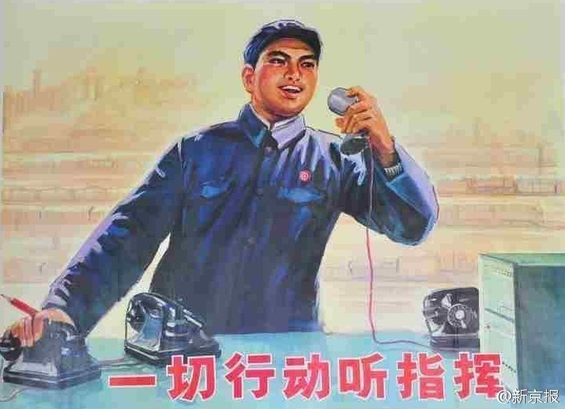

意思是不是之前90%的人反对计划生育呢……@新京报:【国家卫计委：中国#超8成人想生二孩#】全面二孩已开始实行。今日，国家卫生计生委相关负责人表示，根据生育意愿调查，80%以上的群众都是希望生育两个孩子，90%以上都非常支持赞同我们国家的全面两孩政策，全面两孩政策已经基本实现了群众生育意愿和国家生育政策的统一。卫计委：1300万黑户大部分已解决 因计生没有落户的很少 
 卫计委：1300万黑户大部分已解决 因计生没有落户的很少
卫计委：1300万黑户大部分已解决 因计生没有落户的很少